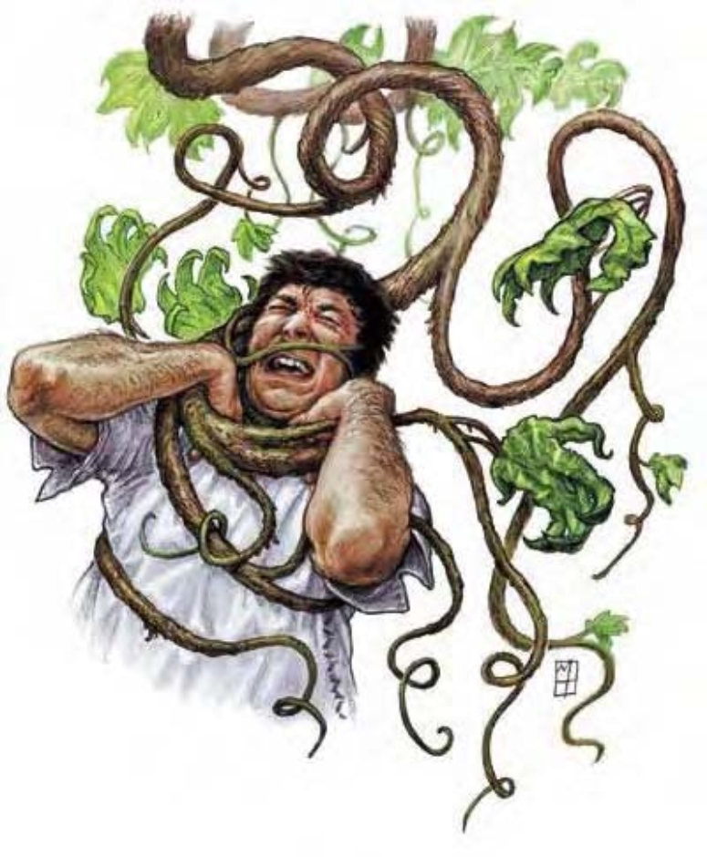

藤蔓有着多纤维的棕色茎部与人类前臂差不多粗。叶子的形状近似人类手掌。杀手藤是移动缓慢的植物，以擒抱压碎动物，并将其尸体堆积于根部附近作为养分来源。
| 资料栏位 | 杀手藤 (Assassin Vine) 大型植物 |
|---|---|
| 生命骰 | 4d8+12 (30HP) |
| 先攻 | +0 |
| 速度 | 5英尺 (1格) |
| 防御等级 | 15 (-1体型、+6天生)、接触9、措手不及15 |
| 基本攻击/擒抱 | +3 / +12 |
| 攻击 | 挥击+7近战 (1d6+7) |
| 全力攻击 | 挥击+7近战 (1d6+7) |
| 占用/触及 | 10英尺 / 10英尺 (使用藤蔓时20英尺) |
| 特殊攻击 | 紧勒1d6+7、纠缠、精通擒抱 |
| 特殊能力 | 盲感30英尺、伪装、对电击免疫、昏暗视觉、植物特性、寒冷抗力10、火焰抗力10 |
| 豁免 | 强韧+7、反射+1、意志+2 |
| 属性 | 力量20、敏捷10、体质16、智力―、感知13、魅力9 |
| 环境 | 温带森林 |
| 组织 | 单独或一片 (2-4) |
| 挑战级数 | 3 |
| 宝藏 | 十分之一钱币、50%宝物、50%物品 |
| 阵营 | 总是绝对中立 |
| 进化 | 5-16HD (超大型); 17-32HD (巨型); 33+HD (超巨型) |
| 等级修正值 | ― |
成熟的杀手藤有一条主藤蔓，约20英尺长。主藤蔓上约每6英寸处就长有较小的分支藤蔓，各约5英尺长。分支藤蔓长有成串叶子，并于夏末结出小果实，形似野葡萄。小果实很硬，味道丰富带苦，可酿成易醉的酒。杀手藤可以移动，但速度很慢。除非得寻找猎物，否则杀手藤通常会留在原地不动。杀手藤有个生长于温泉、火山口或其他热能量源附近的地底种。地底种的茎部较为纤细质硬，藤蔓为银色、棕色或白色，叶子则为灰色。如此一来，该地底种看起来就像矿物沉淀。生长于地底的杀手藤附近通常聚生许多菇类与蕈类，这些菇蕈帮杀手藤隐藏尸体，但杀手藤也得猎杀更多动物以供养整个聚落。
战斗杀手藤的战术很简单：他们静止不动，等猎物进入范围就攻击。杀手藤使用纠缠能力捉住对手，并阻止反击。
紧勒（特异）：一旦通过擒抱检定，杀手藤即可造成 1d6+7 点伤害。
纠缠（超自然）：杀手藤可使用即时动作活化自身 30 英尺内的植物（反射检定 DC=13 部分）。效果持续至杀手藤死亡或决定终止（也属于即时动作）。豁免 DC 的调整值与感知调整值相同。除此之外，本能力与法术“纠缠术”相似（施法者等级 4）。
精通擒抱（特异）：如果杀手藤利用挥击击中对手，即可利用即时动作进行擒抱攻击，且不会引发对方借机攻击。如果擒抱成功，则可定住对手进行“紧勒”。
盲感（特异）：杀手藤没有视觉器官，但可以利用气味、声音或震动，辨明任何在其周遭 30 英尺范围内的敌人。
伪装（特异）：静止不动时，杀手藤看起来与一般植物无异。其他人得通过“侦察”检定（DC=20），才能于杀手藤攻击前发现之。拥有技能“生存”、“自然知识”的人物可以用其中之一取代技能“侦察”进行检定。矮人可使用“熟悉岩石”认出地底种杀手藤。